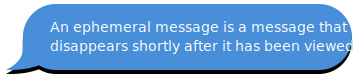
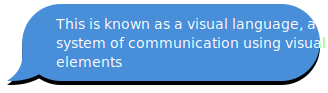
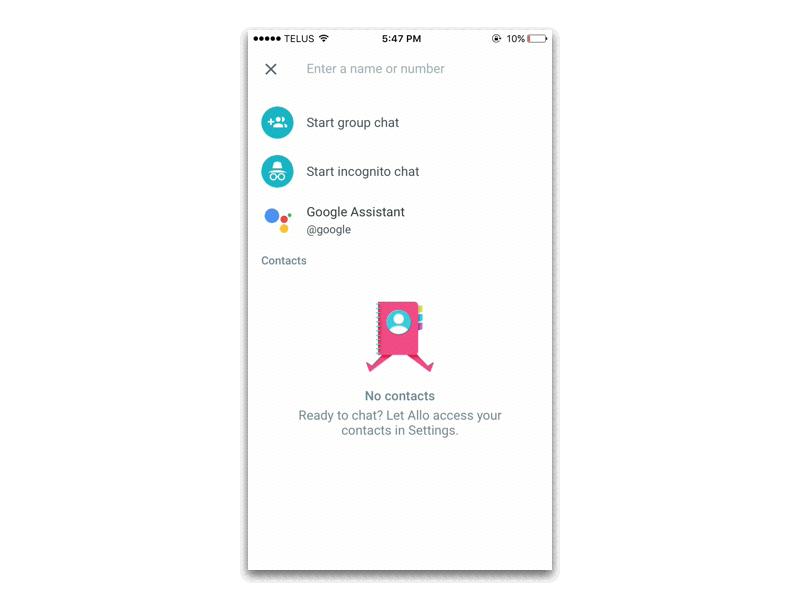
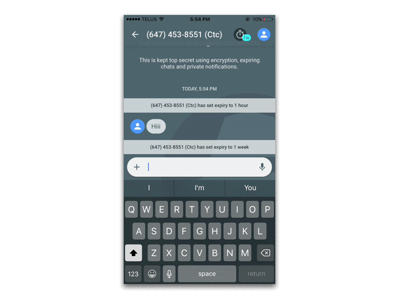
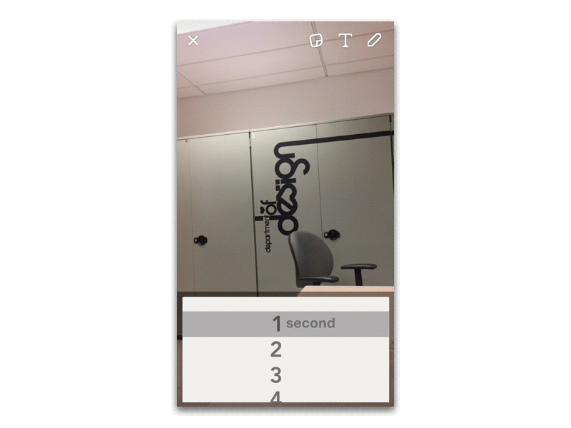
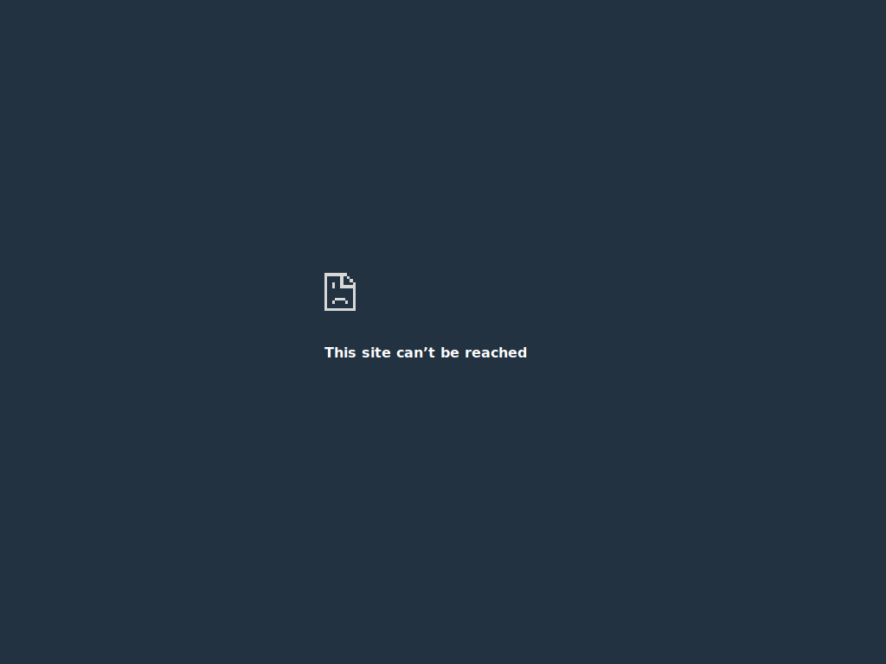

5
Definition
A brief lesson on ephemerality and visual language


The UI of Ephemeral Features
Visuals For Distinct Interactions

1. Snapchat's Unique Iconography
Snapchat is a well-known example of an ephemeral messaging application. Snapchat messages can only be viewed once. During the viewing period, the recipient must maintain contact with the device's touchscreen or the message, which is called a Snap, disappears.
Snaps, which may be videos or photos, are codified by specific geometric shapes and colours.
Emoji's on the right signify meanings based on the users interaction with one another.
2. Instagram's Timeline Bar
On August 2, 2016, instagram implemented its Instagram Stories feature - ephemeral photos and videos. The photos and videos disappear after 24 hours and won’t appear on your profile grid or feed.
To keep track of stories, Instagram implemented a unique and intuitive timeline that on tap, enables the user to preview content back and forth. The visual language entails rectangles that become filled in once triggered by touch.


3. Allo's Incognito Colour Palette
Allo, Google's most recent messaging app, supports chat in Incognito Mode. The chat entails end-to-end encryption, private notifications to keep chats more discreet, and enable expiring chats.
The UI colour palette utilizes dark colours as if to appear inconspicious and unseen.
The UX of Ephemeral Features
How visual experiences become cultural.
1. Setting Expirations on Messages
Ephemeral messaging is a form of digital communication that closely resembles the characteristics of “real” in-person or over-the-phone interaction. Uttered words are seldom recorded, and the images we perceive with our eyes are rarely saved and replayed.
Allo (left) and Snapchat (right) both utilize expiring messages as part of their user experience.


2. Viewing Ephemeral Stories
Both Snapchat and Instagram have allowed Stories to be a part of the Ephemeral experience. Snapchat utilizes a vertical scroll with masonry rectangles while Instagram uses a vertical horizontal to represent linear circles.
Instagram CEO Kevin Systrom has acknowledged the feature's striking resemblance to one on Snapchat. "This isn't about who invented something. "This is about a format, and how you take it to a network and put your own spin on it."


